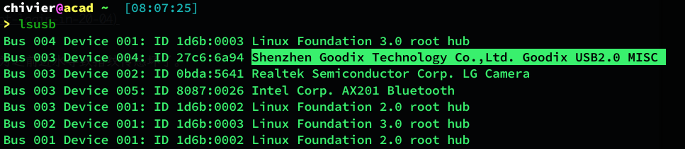
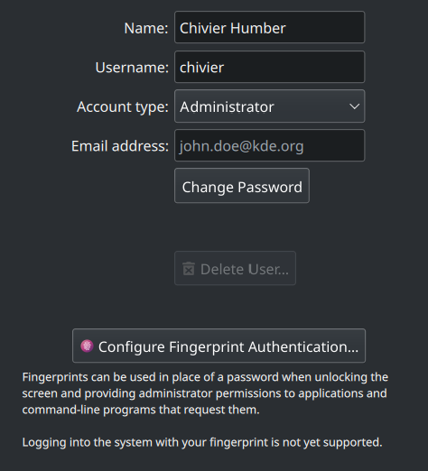

今天是没有指纹的第X天，自从我更新到 Ubuntu 22.04 之后，我深刻意识到这个系统相比 Debian 的落伍之处，虽然大家都是 Debian 系的，但是近两年来 Ubuntu 开发者开始不做人事。和 Gnome 开发组进行摆烂竞赛。对于此事我不做过多评价，只是：
- Ubuntu 升级之后大量的硬件驱动失去了支持，例如指纹、触控板等
- Gnome 升级后和 GTK-3 系列软件发生快捷键冲突
有人问我 GTK-3 系列的软件多不多，我只能说 Gnome 的原生文件管理器就是基于 GTK-3 的。
吐槽太多了，下面记录我今天忍无可忍，发誓修复指纹的过程：
开始分析
首先我先在 Google 上面进行了一番查询，发现了 Stack Overflow 上有人遇到了类似的情况：
但是下面的解决方案不太管用。这个时候我开始怀疑自己的电脑是不是因为之前进水导致指纹传感坏了。
再次分析
在 lsusb 的界面里，发现了一个我感到陌生的模块，这个模块我之前并未过多在意，仔细一查：
好家伙，就是你做坏事了。
紧急查阅驱动，使用
1 | sudo -E ./hw-probe -all -upload |
检测配件看看：
https://linux-hardware.org/?probe=30ddfbc611
寄，这下裂开了，所有的发行版后面都跟着大大的 Fail
那么问题又来了，我之前在 Ubuntu2004 的时候是怎么使用指纹的呢？也就是说这个驱动其实是可以用的，但是需要和特定版本的库以及其他库进行配合。那么我们再想想办法。
单独录入
如果我需要单独录入指纹，那么我们会用到 fprintd-enroll 命令。但是新的问题诞生了：
fprintd-enroll 无法使用
这个时候发现，我用的 libfprintd 版本是 0.4。而一个可用的版本是 0.6。
在一番搜索之后，在 Dell 驱动支持的一个民间网站上找到了一个版本，用下面的命令下载：
1 | wget -O ~/Downloads/libp.deb http://dell.archive.canonical.com/updates/pool/public/libf/libfprint-2-tod1-goodix/libfprint-2-tod1-goodix_0.0.6-0ubuntu1\~somer |
好吧，折腾一圈心力憔悴。
终于可以读入我的指纹信息了，我开开心心录完指纹之后发现：
KDE 不支持，但是具体的原因是什么呢？这个时候我再次进行探究。
登录系统
我们在登录的时候，我们不能使用指纹录入。Ubuntu 的登录使用的是 gdm 系统，而 KDE 用的是 sddm。Sddm 的最新方面还没有支持上，Plasma 也没支持……那我只能寄了。
题外话（关于差点吧电脑搞没）
我今天的一次测试差点把我电脑直接搞死。
如果我想把指纹应用到登录和 sudo 权限的时候，我们就要在 /etc/pam.d/sudo 和 /etc/pam.d/sdmm 进行修改。
https://wiki.archlinux.org/title/KDE_Wallet#Unlock_KDE_Wallet_automatically_on_login
我改完之后彻底没了……
所有用到 sudo 的地方都开始报错：
1 | sudo: PAM account management error: Permission denied |
最终我找到了一丝生机：
我们使用 Dolphin 调用编辑器的时候，我可以用用户密码去获取 root 权限，而 Shell 中不可能得到。
这次事件之后我把我的 root 密码写到了我的笔记本（纸质）上面。终于活下来了。